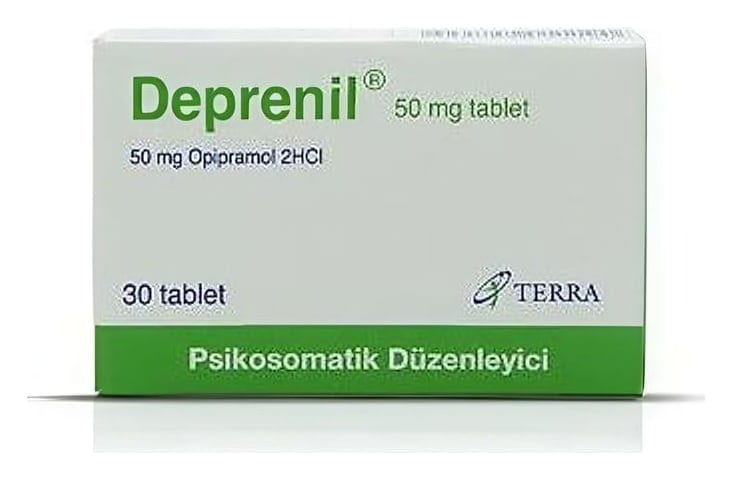

Deprenil 50 mg Tablet, 30 Adet

Ne için kullanılır
KT · Bölüm 1DEPRENİL sakinl eştirici özelliklere sahi p trisiklik antide pr esanl ar olarak biline n bi r ilaç grub una dahildir. Bu ila ç beyninizde ki bazı kimyasal maddelerin etkisini değiştirerek etki li olur .
Her bir tablet 50 mg opipramol dihidroklorür içerir.
Anormal sıkıntı, endişe, korku veya kuruntunun yarattığı ruhsal gerilimle belirgin huzursuzluk hali, sini rlilik ya da gerginlik, uyku bozuklukları, dikkati topl amada güçlük ve de pr esif durumların teda vi sinde kullanıl ır. Ayrıca bu durumların yol açtığı vüc ut semptomları üzerinde de f ayda lı bi r etki ye s ahi pt ir.